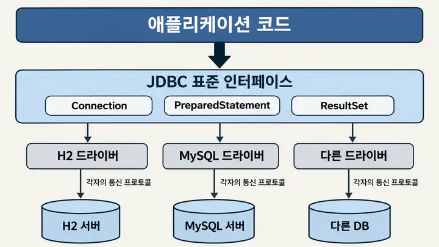
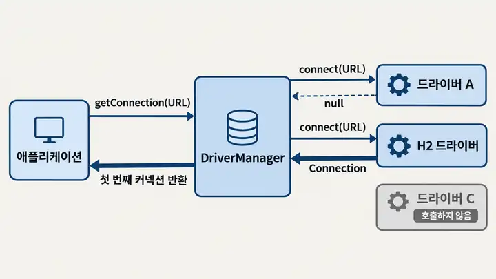
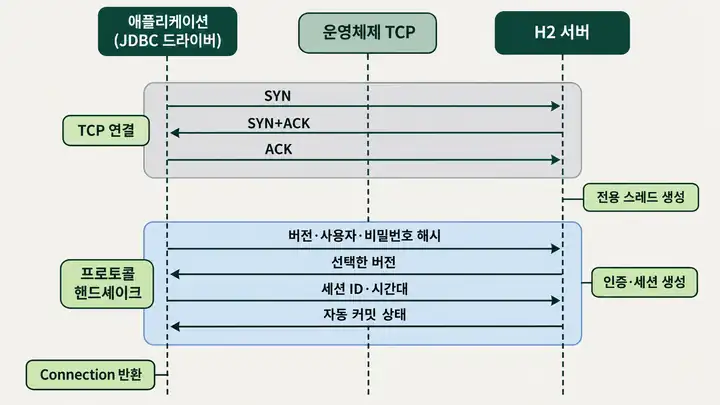
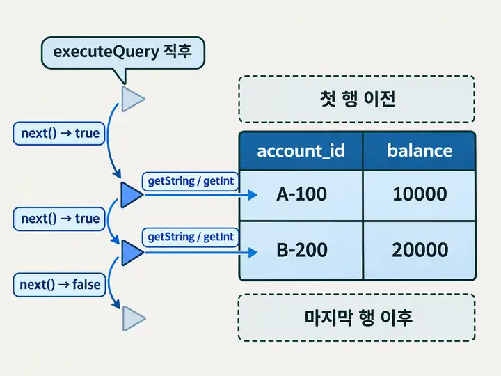

스프링 DB 1편 / 01회
JDBC 이해
자바 코드가 데이터베이스와 대화하는 표준 통로인 JDBC를 인터페이스와 드라이버, DriverManager의 드라이버 선택, 커넥션 하나가 만들어질 때 네트워크와 DB 서버에서 일어나는 일, 등록·조회·수정·삭제의 자원 관리까지 바닥부터 따라간다.
오늘 끝나면 할 수 있는 것
- JDBC가 표준화한 것(java.sql 인터페이스와 드라이버 계약)과 표준화하지 않은 것(SQL 방언, 오류 코드)을 구분하고, 드라이버 jar 없이도 애플리케이션 코드가 컴파일되는 이유를 invokeinterface와 동적 디스패치로 설명할 수 있다.
- DriverManager.getConnection이 서비스 로더로 드라이버를 찾고, 등록된 드라이버마다 connect를 호출해 null이 아닌 첫 커넥션을 돌려주는 과정을 JDK 21 소스 기준으로 추적하고, "No suitable driver found" 오류의 원인을 짚을 수 있다.
- 커넥션 하나를 얻을 때 TCP 연결, DB 프로토콜 핸드셰이크와 인증, 서버 쪽 세션과 스레드가 만들어진다는 것을 시퀀스로 그리고, 그것이 다음 회차의 커넥션 풀로 이어지는 이유를 말할 수 있다.
- PreparedStatement로 등록·조회·수정·삭제를 작성하고, executeUpdate의 반환값, ResultSet 커서의 위치, try-with-resources가 자원을 닫는 순서와 억제된 예외를 실행 결과로 예측할 수 있다.
- 문자열을 이어 붙인 SQL이 SQL 인젝션에 뚫리는 과정을 재현하고, 파라미터 바인딩이 SQL의 구조를 값과 분리해 이를 막는 원리를 설명할 수 있다.
핵심 강의 → 핵심 요약 → 실무 재판단 → 적용 연습 → 이해 확인
01 핵심 강의
이 강의의 차례 · 소제목 14개
- 이 회차의 질문: 자바 프로그램은 데이터베이스와 어떻게 대화하는가
- 프로젝트 준비: 필요한 것은 표준 API와 드라이버 하나
- H2 데이터베이스 설정: 세 가지 연결 방식과 URL
- JDBC 이해: 표준이 없던 세상의 문제
- 표준과 구현을 바이트코드로 확인하기
- JDBC와 최신 데이터 접근 기술
- 데이터베이스 연결: URL, 사용자, 비밀번호로 커넥션 하나를 얻는다
- 커넥션 하나의 정체: 소켓, 핸드셰이크, 세션, 스레드
- JDBC 개발 — 등록
- JDBC 개발 — 조회
- JDBC 개발 — 수정, 삭제
- 자원 정리: 닫는 순서와 억제된 예외
- SQL 인젝션과 파라미터 바인딩
- 정리: 이 회차에서 세운 바닥
이 회차의 질문: 자바 프로그램은 데이터베이스와 어떻게 대화하는가
데이터베이스 입문과 기본편에서는 SQL을 직접 데이터베이스에 입력했다. 콘솔에 select를 치면 표가 돌아왔다. 그런데 실제 서비스에서 SQL을 보내는 쪽은 사람이 아니라 애플리케이션 서버다. 스프링 MVC로 만든 컨트롤러가 요청을 받으면, 그 아래 어딘가에서 자바 코드가 SQL 문자열을 만들어 네트워크 너머의 데이터베이스 서버에 보내고, 돌아온 결과를 자바 객체로 바꾼다. 이 회차는 그 "어딘가"를 연다.
질문은 네 가지다. 첫째, 데이터베이스마다 통신 방식이 다른데 자바 코드는 어떻게 하나의 API로 여러 데이터베이스를 다룰 수 있는가. 둘째, DriverManager.getConnection이라는 한 줄을 호출하면 JVM 안에서는 어떤 클래스가 어떤 순서로 불리고, 네트워크와 데이터베이스 서버에서는 무엇이 만들어지는가. 셋째, SQL을 보내고 결과를 받는 등록·조회·수정·삭제 코드는 어떤 자원을 어떤 순서로 얻고 놓아야 하는가. 넷째, 왜 SQL 문자열을 직접 이어 붙이면 안 되는가.
이 권 전체로 보면 이 회차는 바닥을 다지는 자리다. 다음 회차는 커넥션을 매번 새로 여는 비용을 커넥션 풀과 데이터소스로 줄이고, 그다음 회차들은 트랜잭션과 예외를 다룬다. 그 모든 이야기는 결국 "커넥션이 무엇이고 누가 언제 열고 닫는가"로 돌아온다. 그래서 이 회차에서는 API 사용법보다 커넥션 하나가 실제로 무엇인지를 끝까지 따라가는 데 지면을 많이 쓴다.
실습 환경은 Java 21, Spring Boot 3.x, 그리고 H2 데이터베이스다. 이 회차에 나오는 실행 결과는 H2 2.4.240 jar로 서버와 클라이언트를 함께 띄워 직접 실행해 얻은 것이다. MySQL에 대한 서술은 MySQL 8.0 문서와 MySQL Connector/J 문서로 확인한 범위만 적는다.
프로젝트 준비: 필요한 것은 표준 API와 드라이버 하나
스프링 부트 프로젝트를 만들 때 데이터 접근을 위해 고르는 의존성은 두 종류다. 하나는 스프링이 제공하는 JDBC 지원(spring-boot-starter-jdbc)이고, 다른 하나는 데이터베이스 제조사가 만든 드라이버(H2라면 com.h2database:h2)다. 이 회차의 코드는 스프링의 기능을 하나도 쓰지 않고 순수 JDBC만 쓴다. 그래도 스타터를 미리 넣어 두는 이유는 다음 회차부터 데이터소스와 트랜잭션 매니저, JdbcTemplate을 쓰기 때문이다. Spring Boot 문서에 따르면 spring-boot-starter-jdbc나 spring-boot-starter-data-jpa를 쓰면 커넥션 풀 구현체인 HikariCP 의존성이 자동으로 따라온다.
dependencies {
implementation 'org.springframework.boot:spring-boot-starter-jdbc'
runtimeOnly 'com.h2database:h2'
testImplementation 'org.springframework.boot:spring-boot-starter-test'
}여기서 눈여겨볼 것은 H2 의존성의 범위가 runtimeOnly라는 점이다. 컴파일할 때는 H2가 필요 없고 실행할 때만 필요하다는 뜻이다. 데이터베이스와 대화하는 코드를 쓰는데 그 데이터베이스의 라이브러리 없이 컴파일이 된다는 것이 이상하게 들릴 수 있다. 실제로 이 회차의 예제 클래스들은 H2 jar를 클래스패스에 넣지 않고 javac로 컴파일했고, 오류 없이 컴파일되었다. 실행할 때만 H2 jar를 클래스패스에 넣었다. 이것이 가능한 이유가 바로 JDBC라는 표준의 핵심이며, 아래에서 바이트코드로 확인한다.
스프링 부트는 클래스패스에 H2 같은 임베디드 데이터베이스가 있고 spring.datasource.url을 지정하지 않으면 연결 URL 없이도 임베디드 데이터베이스를 자동 구성한다(Spring Boot 문서 "SQL Databases"). 이 회차에서는 그 자동 구성을 쓰지 않고, 코드에서 직접 URL을 넘겨 커넥션을 얻는다. 자동 구성이 대신 해 주는 일을 손으로 먼저 해 봐야, 나중에 자동 구성이 무엇을 대신하는지 보이기 때문이다.
H2 데이터베이스 설정: 세 가지 연결 방식과 URL
H2는 자바로 작성된 관계형 데이터베이스다. 작고 설치가 간단해서 학습과 테스트에 많이 쓴다. H2를 이해할 때 가장 먼저 알아야 할 것은 같은 H2를 세 가지 방식으로 쓸 수 있다는 점이다. 데이터베이스 엔진이 어느 프로세스 안에서 돌고, 데이터가 어디에 저장되는가가 방식마다 다르다.
| 방식 | URL 형식 (H2 문서) | 엔진이 도는 곳 | 데이터가 있는 곳 |
|---|---|---|---|
| 임베디드(embedded) | jdbc:h2:[file:][경로]이름 예: jdbc:h2:~/bankdb | 애플리케이션 JVM 안 | 디스크 파일 이름.mv.db |
| 인메모리(in-memory) | jdbc:h2:mem:이름 | 애플리케이션 JVM 안 | JVM 힙 메모리(프로세스가 끝나면 사라짐) |
| 서버(TCP/IP) | jdbc:h2:tcp://서버[:포트]/[경로]이름 예: jdbc:h2:tcp://localhost/~/bankdb | 별도의 H2 서버 프로세스 | 서버 쪽 디스크 파일 또는 서버 메모리 |
임베디드 방식은 데이터베이스 엔진이 라이브러리처럼 애플리케이션 프로세스 안에서 돈다. 네트워크를 거치지 않으니 빠르지만, 데이터베이스 파일을 한 프로세스가 붙잡는다. 실제로 H2 TCP 서버가 ~/bankdb를 열어 둔 상태에서 다른 프로세스가 임베디드 URL jdbc:h2:~/bankdb로 같은 파일을 열려고 하면 다음 오류가 난다. 오류 메시지 자체가 해결책으로 "서버 모드를 쓰라"고 안내한다.
90020 Database may be already in use: ".../home/bankdb.mv.db". Possible solutions: close all other connection(s); use the server mode [90020-240]학습 환경에서는 H2 콘솔(웹 화면)로 테이블을 들여다보면서 동시에 애플리케이션을 실행하고 싶을 때가 많다. 두 프로세스가 같은 데이터를 봐야 하므로 서버 모드를 쓴다. 서버 모드에서는 H2 서버 프로세스 하나만 파일을 열고, 애플리케이션과 콘솔은 모두 TCP로 그 서버에 접속한다. 우리가 MySQL 서버에 접속하는 것과 같은 구조이고, 그래서 이 회차의 "커넥션이 무엇인가"를 관찰하기에도 서버 모드가 맞다.
데이터베이스 파일 만들기와 서버 띄우기
서버 모드에는 지켜야 할 순서가 하나 있다. H2 튜토리얼에 따르면 기본 설정에서는 TCP 연결이나 웹 화면으로 데이터베이스를 원격 생성하는 것이 허용되지 않는다. 없는 데이터베이스에 TCP로 접속하면 새로 만들어 주지 않고 오류를 낸다. 실제로 확인한 메시지는 다음과 같다.
90149 Database "mem:other" not found, either pre-create it or allow remote database creation (not recommended in secure environments) [90149-240]그래서 처음 한 번은 임베디드 URL로 접속해 데이터베이스 파일을 만든다. jdbc:h2:~/bankdb로 접속하면 사용자 홈 디렉터리에 bankdb.mv.db 파일이 생긴다(.mv.db는 H2 문서가 밝힌 데이터베이스 파일의 확장자다). 그다음부터는 서버를 띄우고 jdbc:h2:tcp://localhost/~/bankdb로 접속한다. 원격 생성을 허용하는 -ifNotExists 옵션도 있지만, H2 튜토리얼은 보안상의 이유로 원격 생성을 켜지 말라고 권하고, 이 옵션을 -tcpAllowOthers 같은 외부 접속 허용 옵션과 함께 쓰면 사실상 원격 보안 구멍이 된다고 경고한다.
# 1) 처음 한 번: 임베디드 모드로 접속해 ~/bankdb.mv.db 를 만들고 테이블을 생성한다
java -cp h2-2.4.240.jar org.h2.tools.Shell -url "jdbc:h2:~/bankdb" -user sa -password "" \
-sql "create table account(account_id varchar(10) primary key, balance integer not null)"
# 2) 그다음부터: TCP 서버를 띄운다
java -cp h2-2.4.240.jar org.h2.tools.Server -tcp
# TCP server running at tcp://localhost:9092 (only local connections)서버의 도움말(-?)에 따르면 TCP 서버의 기본 포트는 9092, 웹 콘솔의 기본 포트는 8082다. 실행 메시지의 "only local connections"는 기본 설정에서 같은 컴퓨터의 접속만 받는다는 뜻이고, 다른 컴퓨터의 접속을 허용하려면 -tcpAllowOthers 옵션을 준다. URL에 포트를 생략한 jdbc:h2:tcp://localhost/~/bankdb는 기본 포트 9092로 접속한다. 이 회차에서 쓸 테이블은 다음과 같다. 계좌 번호와 잔액만 있는 단순한 구조다. H2 콘솔에서 실행해도 되고, 위처럼 셸 도구로 실행해도 된다.
drop table if exists account;
create table account (
account_id varchar(10) primary key,
balance integer not null
);한 가지 실험 결과를 덧붙인다. TCP 서버가 떠 있어도 그 데이터베이스에 연결된 TCP 커넥션이 하나도 없을 때는 다른 프로세스가 임베디드 URL로 같은 파일을 열 수 있었다. 커넥션이 열려 있는 동안에만 90020 오류가 났다. H2 서버는 마지막 커넥션이 닫히면 데이터베이스를 닫고 파일을 놓아 준다는 뜻이다. 이처럼 "파일을 누가 열고 있는가"는 결국 "커넥션이 살아 있는가"와 연결되어 있다.
JDBC 이해: 표준이 없던 세상의 문제
JDBC가 없다고 가정해 보자. 애플리케이션이 MySQL에 SQL을 보내려면 MySQL 서버가 정한 바이트 형식, 즉 MySQL 클라이언트/서버 프로토콜을 따라 패킷을 만들어 소켓에 써야 한다. MySQL 내부 문서를 보면 이 프로토콜은 접속 직후 서버가 먼저 핸드셰이크 패킷을 보내고, 클라이언트가 핸드셰이크 응답과 인증 데이터를 보내고, 서버가 OK 패킷으로 받아 주면 그때부터 명령을 주고받는 단계로 넘어가는 식으로 정해져 있다. PostgreSQL, Oracle, H2는 모두 저마다 다른 프로토콜을 쓴다. H2 서버 모드도 H2만의 TCP 프로토콜로 대화한다.
그러면 애플리케이션 코드는 데이터베이스마다 세 가지 일을 따로 배워야 한다. 커넥션 연결(소켓을 열고 핸드셰이크와 인증을 수행), SQL 전달(명령 패킷을 만들어 보냄), 결과 응답(결과 패킷을 읽어 행과 열로 해석)이다. 데이터베이스를 MySQL에서 PostgreSQL로 바꾸면 이 코드를 전부 다시 써야 한다. 개발자 역시 데이터베이스를 바꿀 때마다 새 통신 방식을 배워야 한다. 데이터베이스 제조사가 각자 클라이언트 라이브러리를 만들어 준다 해도, 라이브러리마다 메서드 이름과 사용법이 다르면 문제는 그대로다.
자바 진영은 이 문제를 "인터페이스를 표준으로 정하고, 구현은 제조사에 맡기는" 방식으로 풀었다. 그것이 JDBC(Java Database Connectivity)다. JDBC는 JDK 1.1 때부터 자바 표준 라이브러리에 들어 있었다(java.sql.Driver 인터페이스의 @since 1.1). Java 21의 java.sql 패키지 문서는 이 패키지가 JDBC 4.3 API라고 밝히며, JDBC 4.3은 Java 9에서, 4.2는 Java 8에서, 4.0은 Java 6에서 들어왔다고 적고 있다. 이 회차 실험에서 H2 드라이버의 DatabaseMetaData도 JDBC 4.3을 지원한다고 보고했다.
세 개의 인터페이스가 세 가지 일을 맡는다
앞에서 데이터베이스와 대화하는 일을 세 가지로 나눴다. JDBC는 이 세 가지를 각각 인터페이스로 정의했다.
| 하는 일 | JDBC 인터페이스 | H2 드라이버의 구현 클래스(실험에서 확인) |
|---|---|---|
| 커넥션 연결 | java.sql.Connection | org.h2.jdbc.JdbcConnection |
| SQL 전달 | java.sql.Statement, java.sql.PreparedStatement | H2의 org.h2.jdbc 패키지 클래스 |
| 결과 응답 | java.sql.ResultSet | H2의 org.h2.jdbc 패키지 클래스 |
| 드라이버 진입점 | java.sql.Driver | org.h2.Driver |
애플리케이션 코드는 왼쪽의 인터페이스에만 의존한다. 실제로 메서드가 실행되는 객체는 오른쪽의 제조사 클래스다. 이 오른쪽 클래스들을 묶은 jar를 JDBC 드라이버라고 한다. MySQL에는 MySQL Connector/J라는 드라이버가, H2에는 H2 jar 자체에 포함된 드라이버가 있다. 데이터베이스를 바꾸면 드라이버 jar를 바꾸고 URL을 바꾼다. 인터페이스만 쓴 애플리케이션 코드는 그대로 둔다.
애플리케이션 코드
─────────────────────────────────────────────
Connection / PreparedStatement / ResultSet ← java.sql 인터페이스(표준)
─────────────────────────────────────────────
│ │ │
H2 드라이버 MySQL 드라이버 기타 드라이버 ← 제조사 구현(jar)
(org.h2.*) (Connector/J)
│ H2 TCP 프로토콜 │ MySQL 프로토콜 │
▼ ▼ ▼
H2 서버 MySQL 서버 기타 DB 서버

JDBC가 표준화하지 않은 것
마지막 문장이 이 회차에서 가장 흔한 오해를 바로잡는다. JDBC는 API를 표준화했지 SQL을 표준화하지 않았다. 결과 개수를 제한하는 문법, 자동 증가 키를 만드는 방법, 날짜 함수의 이름은 데이터베이스마다 다르고, JDBC는 그 차이를 감춰 주지 않는다. 드라이버는 애플리케이션이 준 SQL 문자열을 그대로 데이터베이스에 전달한다. 그래서 데이터베이스를 바꾸면 자바 코드는 그대로 두더라도 SQL은 고쳐야 할 수 있다. 이 차이를 흡수하는 일은 JPA 같은 상위 기술이 방언(dialect)이라는 개념으로 맡는다.
오류 정보도 완전히 표준화되지 않았다. SQLException은 getSQLState()로 표준 코드 체계의 상태 값을, getErrorCode()로 제조사 고유의 오류 번호를 돌려준다. 같은 "기본 키 중복"이라도 제조사 오류 번호는 데이터베이스마다 다르다. 이 차이를 스프링이 어떻게 하나의 예외 계층으로 바꾸는지는 이 권의 예외 처리 회차에서 다룬다.
표준과 구현을 바이트코드로 확인하기
"인터페이스에만 의존한다"는 말을 눈으로 확인해 보자. 아래에서 작성할 AccountRepository.delete 메서드를 컴파일한 뒤 javap -c로 바이트코드를 보면, 커넥션과 문장에 대한 모든 호출이 invokeinterface 명령으로 되어 있고 그 대상은 전부 java/sql 패키지의 인터페이스다. org/h2라는 이름은 어디에도 없다.
9: invokeinterface #15, 2 // InterfaceMethod java/sql/Connection.prepareStatement:(Ljava/lang/String;)Ljava/sql/PreparedStatement;
20: invokeinterface #27, 3 // InterfaceMethod java/sql/PreparedStatement.setString:(ILjava/lang/String;)V
27: invokeinterface #41, 1 // InterfaceMethod java/sql/PreparedStatement.executeUpdate:()I클래스 파일의 상수 풀에는 "java/sql/PreparedStatement 인터페이스의 executeUpdate:()I"라는 기호 참조만 기록된다. 컴파일러는 이 인터페이스가 JDK에 있는지만 확인하면 되므로 H2 jar 없이 컴파일이 끝난다. 실행 중에 invokeinterface가 처음 실행되면 JVM은 기호 참조를 해석하고, 스택 위에 놓인 실제 객체(여기서는 H2의 클래스)의 클래스에서 그 메서드의 구현을 찾아 호출한다. 자바 기본편에서 본 다형성, 즉 동적 디스패치(dynamic dispatch)가 데이터베이스 접근에서 그대로 쓰이는 것이다.
그러면 "실제 객체"는 누가 만들어 주는가. 애플리케이션 코드에는 new JdbcConnection(...) 같은 코드가 없다. 구현 객체를 만드는 일은 드라이버가 하고, 어떤 드라이버를 쓸지 고르는 일은 DriverManager가 한다. 애플리케이션이 구현 클래스의 이름을 한 번도 쓰지 않아도 되도록, 객체 생성과 선택을 표준 라이브러리 쪽으로 밀어 넣은 구조다. 스프링 핵심 원리에서 본 "구현이 아니라 역할에 의존하라"는 원칙을 JDK 수준에서 실현한 셈이고, 다음 회차의 DataSource는 이 생각을 한 걸음 더 밀고 간다.
JDBC와 최신 데이터 접근 기술
JDBC는 1990년대에 만들어진 오래된 API다. 요즘 스프링 애플리케이션에서 Connection과 PreparedStatement를 직접 다루는 코드는 드물다. 그렇다고 JDBC가 사라진 것은 아니다. 최신 데이터 접근 기술들은 JDBC를 대체하지 않고 그 위에 올라탄다. 크게 두 갈래가 있다.
첫째는 SQL 매퍼(SQL Mapper)다. 스프링의 JdbcTemplate, 그리고 MyBatis가 여기에 속한다. 개발자는 여전히 SQL을 직접 쓴다. 대신 커넥션을 얻고, 문장을 준비하고, 결과를 반복해 읽고, 자원을 닫는 반복 작업을 기술이 대신해 준다. Spring Framework 레퍼런스의 "Spring JDBC — who does what?" 표가 이 분업을 정확히 보여 준다. 연결 파라미터 정의, SQL 작성, 파라미터 값 제공, 각 행에 대한 작업은 개발자가 하고, 커넥션 열기, 문장 준비와 실행, 결과 반복, 예외 처리, 트랜잭션 처리, 커넥션·문장·결과 집합 닫기는 스프링이 한다.
둘째는 ORM(Object-Relational Mapping)이다. JPA라는 자바 표준과 그 구현체인 Hibernate가 대표적이다. 개발자는 SQL을 직접 쓰는 대신 객체를 저장하고 꺼내는 코드를 쓰고, ORM이 그 객체에 맞는 SQL을 만들어 JDBC로 실행한다. 앞에서 말한 SQL 방언 차이도 ORM이 흡수한다. 대신 ORM이 언제 어떤 SQL을 만드는지 이해하지 못하면 예상하지 못한 쿼리가 나가는 일이 생긴다.
| 구분 | 개발자가 쓰는 것 | 기술이 대신하는 것 | 바닥에서 실제로 일하는 것 |
|---|---|---|---|
| 순수 JDBC | SQL, 커넥션·문장·결과 처리, 자원 정리 전부 | 없음 | JDBC 드라이버 |
| SQL 매퍼 (JdbcTemplate, MyBatis) | SQL, 파라미터, 행을 객체로 바꾸는 코드 | 커넥션 획득·반환, 반복, 예외 변환, 자원 정리 | JDBC 드라이버 |
| ORM (JPA/Hibernate) | 엔티티 객체와 매핑 정보 | 위의 모든 것 + SQL 생성, 방언 처리 | JDBC 드라이버 |
표의 마지막 열이 이 절의 요점이다. 어떤 기술을 쓰든 데이터베이스와 실제로 바이트를 주고받는 것은 JDBC 드라이버다. 그래서 커넥션이 부족하다는 장애, 트랜잭션이 커밋되지 않았다는 장애, 결과 집합이 메모리를 다 먹었다는 장애는 어떤 기술 위에서 일어나든 결국 JDBC 수준에서 설명된다. 이 권이 JDBC부터 시작하는 이유이고, 이후의 JPA 강좌들을 읽을 때도 이 바닥은 그대로 깔려 있다.
데이터베이스 연결: URL, 사용자, 비밀번호로 커넥션 하나를 얻는다
이제 실제로 커넥션을 얻어 보자. 접속 정보는 URL, 사용자 이름, 비밀번호 세 가지다. 여러 클래스에서 같은 값을 쓰므로 상수로 모아 두고, 커넥션을 얻는 코드는 작은 정적 메서드 하나로 감싼다. 이 회차의 모든 예제는 이 메서드로 커넥션을 얻는다. 사용자 이름과 비밀번호는 앞에서 데이터베이스 파일을 만들 때 쓴 계정(sa, 빈 비밀번호)이다.
public final class DbConfig {
public static final String URL = "jdbc:h2:tcp://localhost/~/bankdb";
public static final String USERNAME = "sa";
public static final String PASSWORD = "";
private DbConfig() {
}
}import java.sql.Connection;
import java.sql.DriverManager;
import java.sql.SQLException;
public final class DbConnector {
private DbConnector() {
}
public static Connection open() throws SQLException {
return DriverManager.getConnection(DbConfig.URL, DbConfig.USERNAME, DbConfig.PASSWORD);
}
}import java.sql.Connection;
import java.sql.SQLException;
public class ConnectCheck {
public static void main(String[] args) throws SQLException {
try (Connection con = DbConnector.open()) {
System.out.println("connection = " + con);
System.out.println("class = " + con.getClass().getName());
System.out.println("autoCommit = " + con.getAutoCommit());
}
}
}connection = conn0: url=jdbc:h2:tcp://localhost/~/bankdb user=SA
class = org.h2.jdbc.JdbcConnection
autoCommit = true세 줄을 하나씩 읽어 보자. 첫 줄은 H2의 커넥션 객체가 toString()으로 만든 문자열이다. conn0은 이 JVM 안에서 H2 드라이버가 만든 첫 커넥션이라는 뜻이고, 사용자 이름이 대문자 SA로 바뀌어 있다. 둘째 줄이 핵심이다. 변수 con의 타입은 java.sql.Connection인데, 실제 객체의 클래스는 org.h2.jdbc.JdbcConnection이다. 앞 절에서 바이트코드로 본 invokeinterface가 실행 중에 찾아가는 "실제 객체"가 바로 이것이다. 셋째 줄의 autoCommit = true는 Connection Javadoc이 정한 기본값이다. 커넥션은 자동 커밋 모드로 시작하고, 이 모드에서는 문장 하나하나가 각각의 트랜잭션으로 실행되고 곧바로 커밋된다. 이 기본값이 계좌 이체 같은 작업에서 어떤 문제를 만드는지는 트랜잭션 회차에서 다룬다.
접속 정보를 코드에 상수로 박아 두는 것은 학습용 단순화다. 실제 서비스에서는 비밀번호를 소스 코드에 두지 않고 설정 파일이나 환경 변수로 뺀다. 스프링 부트에서는 spring.datasource.url, spring.datasource.username, spring.datasource.password 속성이 이 세 상수의 자리를 대신하며, 다음 회차에서 데이터소스를 만들 때 이어진다.
DriverManager.getConnection 안에서 일어나는 일
DriverManager.getConnection 한 줄 뒤에서 무슨 일이 일어나는지 JDK 21의 java.sql.DriverManager 소스(JDK 설치 경로의 lib/src.zip)로 따라가 보자. 사용자 이름과 비밀번호를 받는 오버로드는 두 값을 Properties 객체에 "user", "password"라는 키로 넣은 뒤, 모든 getConnection이 함께 쓰는 비공개 작업 메서드를 부른다. 그 메서드가 하는 일은 다섯 단계로 나뉜다.
- 호출자의 클래스 로더 결정getConnection을 부른 클래스의 클래스 로더를 구한다. 그것이 없거나 플랫폼 클래스 로더이면 현재 스레드의 컨텍스트 클래스 로더를 쓴다.
- URL 검사URL이 null이면 "The url cannot be null"이라는 SQLException(SQLState 08001)을 던진다.
- 드라이버 초기화(최초 한 번)ensureDriversInitialized가 jdbc.drivers 시스템 속성과 ServiceLoader.load(Driver.class)로 드라이버를 찾는다. 이 작업은 플래그와 락으로 JVM 안에서 한 번만 실행된다.
- 등록된 드라이버를 차례로 시도registeredDrivers 목록을 앞에서부터 돌며, 호출자가 볼 수 있는 드라이버이면 driver.connect(url, info)를 부른다. null이 아닌 커넥션이 오면 즉시 반환하고, SQLException이 나면 첫 예외만 기억하고 다음 드라이버로 넘어간다.
- 모두 실패기억해 둔 예외가 있으면 그것을 던지고, 없으면 "No suitable driver found for " + url 메시지와 SQLState 08001로 SQLException을 던진다.
세 번째 단계가 드라이버를 "찾는" 부분이다. ServiceLoader는 클래스패스의 jar마다 META-INF/services/java.sql.Driver라는 파일이 있는지 보고, 그 안에 적힌 클래스 이름을 읽는다. H2 2.4.240 jar를 열어 보면 이 파일에 org.h2.Driver 한 줄이 적혀 있다. DriverManager는 서비스 로더의 반복자를 끝까지 돌리기만 하는데, 반복자가 다음 원소를 꺼낼 때 그 클래스의 인스턴스를 만들고, 인스턴스를 만들려면 클래스 초기화가 먼저 일어난다. H2의 org.h2.Driver는 정적 초기화 블록에서 자기 인스턴스를 DriverManager.registerDriver로 등록한다. Driver 인터페이스 Javadoc도 "드라이버 클래스가 로드되면 자기 인스턴스를 만들어 DriverManager에 등록해야 한다"고 요구한다. 등록된 드라이버는 CopyOnWriteArrayList인 registeredDrivers에 쌓인다.
이 흐름은 눈으로 볼 수 있다. DriverManager.setLogWriter로 로그 출력 대상을 지정하면 DriverManager 소스 곳곳의 println이 실제로 찍힌다. 아래는 커넥션을 얻기 직전에 DriverManager.setLogWriter(new PrintWriter(System.out, true))를 호출하고 실행한 결과다. 이 실행에서는 다른 프로그램과 포트가 겹치지 않도록 서버를 임의의 빈 포트로 띄워서 URL에 포트 번호가 붙어 있고, 포트 번호와 객체의 해시 값은 실행마다 다를 수 있다. 중간에 H2 내부에서 찍힌 SQLException: OutOfMemoryError 스택 트레이스는 생략했다. 이것은 오류가 아니라, H2의 DbException 클래스가 초기화될 때 메모리 부족 상황에 대비해 미리 만들어 두는 SQLException 객체다. SQLException 생성자는 로그 작성기가 지정되어 있으면 생성될 때마다 자기 정보를 거기에 쓰기 때문에 함께 찍혔다.
DriverManager.getConnection("jdbc:h2:tcp://localhost:56246/~/bankdb")
registerDriver: org.h2.Driver@30f39991
DriverManager.initialize: jdbc.drivers = null
JDBC DriverManager initialized
trying org.h2.Driver
getConnection returning org.h2.Driver로그의 순서가 소스의 순서와 정확히 맞는다. 먼저 getConnection이 호출되고, 그 안에서 처음으로 드라이버 초기화가 일어나며, 서비스 로더가 org.h2.Driver를 꺼내는 순간 H2의 정적 초기화 블록이 registerDriver를 부른다. 그다음 서비스 로더를 돌리기 전에 읽어 둔 jdbc.drivers 속성 값을 로그로 남기고(지정하지 않았으니 null), 초기화를 마친 뒤 등록된 드라이버에게 차례로 접속을 시도한다. 드라이버가 하나뿐이니 trying은 한 번만 찍혔다.
드라이버 쪽에서 "내 URL인가"를 판단하는 코드는 의외로 단순하다. H2 2.4.240의 org.h2.Driver.connect는 URL이 jdbc:h2:로 시작하면 커넥션을 만들고, 아니면 null을 돌려준다. Driver.connect의 Javadoc이 "드라이버는 주어진 URL에 맞지 않는 종류라는 것을 알면 null을 돌려줘야 한다"고 정해 두었기 때문이다. 아래는 그 메서드를 줄여 옮긴 것이다.
public Connection connect(String url, Properties info) throws SQLException {
if (url == null) {
throw /* URL 형식 오류 */ ...;
} else if (url.startsWith(Constants.START_URL)) { // START_URL = "jdbc:h2:"
return new JdbcConnection(url, info, null, null, false);
} else if (url.equals(DEFAULT_URL)) {
// ... (데이터베이스 안에서 실행되는 자바 함수용 내부 URL)
} else {
return null; // 내 URL이 아니다
}
}그래서 클래스패스에 MySQL 드라이버와 H2 드라이버가 함께 있고 MySQL URL로 getConnection을 호출하면, 등록 순서에 따라 H2 드라이버가 먼저 불릴 수도 있다. 그래도 H2 드라이버는 URL 앞부분을 보고 null을 돌려주므로 DriverManager는 다음 드라이버로 넘어간다. URL의 jdbc:h2:, jdbc:mysql: 같은 앞부분은 사람이 읽는 표식이 아니라, 드라이버들이 "이건 내 일이다"를 가려내는 실제 판별 기준이다.

"No suitable driver found"가 말해 주는 것
이 흐름을 알면 가장 흔한 접속 오류 메시지를 정확히 읽을 수 있다. 실험으로 두 가지 상황을 만들었다. 하나는 URL의 콜론을 세미콜론으로 잘못 쓴 경우(jdbc:h2;tcp://localhost/~/bankdb)이고, 다른 하나는 URL은 맞지만 실행할 때 H2 jar를 클래스패스에서 뺀 경우다. 두 상황의 결과는 같았다.
No suitable driver found for jdbc:h2;tcp://localhost/~/bankdb / SQLState=08001
java.sql.SQLException: No suitable driver found for jdbc:h2:tcp://localhost/~/bankdb첫째 경우는 H2 드라이버가 등록되어 있었지만 jdbc:h2:로 시작하지 않는 URL이라 null을 돌려줬다. 둘째 경우는 서비스 로더가 찾을 jar가 없어서 등록된 드라이버가 하나도 없었다. 어느 쪽이든 커넥션을 돌려준 드라이버도, 예외를 던진 드라이버도 없으니 소스의 맨 마지막 줄에 도달한다. 즉 이 메시지는 "데이터베이스에 접속하다 실패했다"가 아니라 "접속을 시도할 드라이버를 고르지 못했다"는 뜻이다. 데이터베이스 서버는 이 단계에서 아무것도 받지 못했다.
반대로 URL도 맞고 드라이버도 있는데 서버가 떠 있지 않으면 메시지가 달라진다. 빈 포트를 가리키는 URL로 접속하자 H2 드라이버가 직접 예외를 던졌다.
org.h2.jdbc.JdbcSQLNonTransientConnectionException: Connection is broken: "java.net.ConnectException: Connection refused (connect failed): localhost:56075" [90067-240]H2 드라이버가 URL을 자기 것으로 받아들인 뒤 소켓을 열다 실패했고, DriverManager는 그 예외를 기억했다가 그대로 다시 던졌다. 오류 메시지에 제조사 이름과 오류 번호가 보이면 드라이버 선택은 끝났고 그다음 단계(네트워크, 인증, 데이터베이스)에서 실패한 것이다. 장애를 볼 때 이 구분 하나로 조사 범위가 절반으로 줄어든다.
Class.forName이 하던 일
오래된 JDBC 예제에는 커넥션을 얻기 전에 Class.forName("org.h2.Driver") 같은 줄이 꼭 있다. 이 줄은 클래스를 이름으로 찾아 로드하고 초기화한다. 초기화가 일어나면 정적 초기화 블록이 실행되어 드라이버가 등록된다. 서비스 로더가 하는 일을 손으로 한 것이다. Java SE 21의 java.sql 패키지 문서는 JDBC 4.0(Java 6)에서 드라이버 자동 발견이 들어와 더 이상 Class.forName으로 드라이버 클래스를 로드할 필요가 없다고 적고 있다. 지금도 Class.forName을 호출하면 동작은 하지만, META-INF/services 파일을 가진 드라이버라면 필요 없는 줄이다.
마지막으로 첫 단계의 클래스 로더 확인을 짚어 두자. 소스의 isDriverAllowed는 등록된 드라이버의 클래스 이름을 호출자의 클래스 로더로 다시 찾아, 같은 Class 객체가 나올 때만 그 드라이버를 쓴다. 하나의 JVM 안에 클래스 로더가 여러 개 있는 환경, 예를 들어 서블릿 컨테이너가 웹 애플리케이션마다 따로 클래스 로더를 두는 경우에 다른 애플리케이션이 등록한 드라이버를 건너뛰기 위한 장치다. DriverManager는 JVM 전역의 정적 상태이므로 이런 구분이 필요하다. 덧붙여 DriverManager의 Javadoc 첫머리는 javax.sql.DataSource가 데이터 소스에 연결하는 데 더 권장되는 방법이라고 밝히는데, 그 이유는 다음 회차에서 다룬다.
커넥션 하나의 정체: 소켓, 핸드셰이크, 세션, 스레드
앞의 실행 결과에서 커넥션은 그냥 자바 객체 하나처럼 보였다. 하지만 JdbcConnection 객체가 만들어지는 동안 두 프로세스와 운영체제에서 여러 가지가 함께 만들어진다. H2 2.4.240 소스에서 서버 모드 커넥션의 생성 과정을 따라가 보자. JdbcConnection 생성자는 SessionRemote 객체를 만들고, URL의 데이터베이스 부분이 tcp:로 시작하는 원격 URL이면 이 객체가 서버에 접속한다. 접속을 담당하는 initTransfer 메서드의 앞부분은 다음과 같다.
Socket socket = NetUtils.createSocket(server, Constants.DEFAULT_TCP_PORT, ci.isSSL(),
ci.getProperty("NETWORK_TIMEOUT", 0));
Transfer trans = new Transfer(this, socket);
// ...
trans.writeInt(Constants.TCP_PROTOCOL_VERSION_MIN_SUPPORTED);
trans.writeInt(Constants.TCP_PROTOCOL_VERSION_MAX_SUPPORTED);
trans.writeString(db);
trans.writeString(ci.getOriginalURL());
trans.writeString(ci.getUserName());
trans.writeBytes(ci.getUserPasswordHash());
// ... (파일 비밀번호 해시, 접속 속성들)
done(trans); // 보내고 서버의 응답을 기다린다
clientVersion = trans.readInt(); // 서버가 고른 프로토콜 버전
// ... (세션 ID와 시간대를 보내고)
done(trans);
autoCommit = trans.readBoolean(); // 서버 세션의 자동 커밋 상태첫 줄의 createSocket이 TCP 연결을 연다. 이때 운영체제는 TCP의 3방향 핸드셰이크(SYN, SYN+ACK, ACK)를 주고받아 연결을 성립시키고, 양쪽 프로세스에 소켓(파일 디스크립터)을 하나씩 만든다. 연결이 생긴 뒤에야 H2의 프로토콜 대화가 시작된다. 클라이언트는 자기가 지원하는 프로토콜 버전의 범위, 데이터베이스 이름, URL, 사용자 이름, 그리고 비밀번호 자체가 아니라 클라이언트에서 계산한 비밀번호 해시를 보낸다. 서버는 버전을 고르고 사용자를 확인한 뒤 응답하고, 클라이언트가 세션 ID와 시간대를 보내면 서버는 그 세션의 자동 커밋 상태를 돌려준다. 앞의 실행 결과에서 본 autoCommit = true는 사실 서버 세션의 상태를 이 핸드셰이크에서 받아 온 값이다.
서버 쪽에서는 무엇이 생길까. H2 서버의 TcpServer.listen은 다음 루프를 돈다. 리스너 스레드가 serverSocket.accept()로 새 연결을 받으면, 그 소켓을 처리할 TcpServerThread 객체를 만들고 새 스레드를 하나 띄운다(서버 옵션으로 가상 스레드를 켜면 가상 스레드를 쓴다). 스레드 이름은 리스너 스레드 이름 뒤에 thread-번호를 붙인 것이다. 즉 기본 설정의 H2 서버는 커넥션 하나마다 전용 스레드 하나를 둔다. 그 스레드가 이 연결로 들어오는 모든 요청을 읽고, 해당 세션에서 SQL을 실행하고, 결과를 돌려보낸다.
실험으로 확인해 보자. 커넥션 두 개를 연 채로 각각 select session_id()를 실행하고, information_schema.sessions의 행 수를 센 뒤, 커넥션을 닫기 전에 서버 프로세스의 스레드 목록(jcmd 서버PID Thread.print)과 서버 포트의 소켓 목록(lsof)을 찍었다. 이 실험은 다른 프로그램과 포트가 겹치지 않도록 서버를 임의의 빈 포트(이번 실행에서는 55772)로 띄웠다. 포트 번호, 세션 ID, 스레드 번호는 실행마다 다르다.
conn0: url=jdbc:h2:tcp://localhost:55772/~/bankdb user=SA -> session_id=3
conn1: url=jdbc:h2:tcp://localhost:55772/~/bankdb user=SA -> session_id=4
sessions=2"H2 TCP Server (tcp://localhost:55772)" ... runnable
"H2 TCP Server (tcp://localhost:55772) thread-29" ... runnable
"H2 TCP Server (tcp://localhost:55772) thread-30" ... runnable
java (서버) TCP *:55772 (LISTEN)
java (서버) TCP 127.0.0.1:55772->127.0.0.1:55834 (ESTABLISHED)
java (서버) TCP 127.0.0.1:55772->127.0.0.1:55835 (ESTABLISHED)
java (클라이언트) TCP 127.0.0.1:55834->127.0.0.1:55772 (ESTABLISHED)
java (클라이언트) TCP 127.0.0.1:55835->127.0.0.1:55772 (ESTABLISHED)클라이언트 쪽 Connection 객체 두 개에 대해 서버에는 세션 두 개, 전용 스레드 두 개가 있고, 운영체제에는 연결된 TCP 소켓 쌍이 두 개 있다. 첫 번째 스레드는 새 연결을 기다리는 리스너다. 클라이언트 쪽 포트 55834, 55835는 운영체제가 연결마다 골라 준 임시 포트이고, 서버 쪽 소켓과 짝을 이룬다. 정리하면 자바의 Connection 객체 하나는 "TCP 연결 하나 + 서버 쪽 세션 하나 + 그 세션을 처리하는 서버 스레드 하나"의 손잡이다.
애플리케이션 JVM H2 서버 JVM
────────────────── ──────────────────────────
DriverManager.getConnection 리스너 스레드: accept() 대기
└ org.h2.Driver.connect
└ new JdbcConnection
└ SessionRemote ── SYN ─────────────▶ (운영체제)
◀── SYN+ACK ───────
── ACK ─────────────▶ accept() 반환
TcpServerThread 생성, 전용 스레드 시작
── 버전 범위, DB 이름,
사용자, 비밀번호 해시 ─▶ 버전 선택, 인증, 세션 생성
◀── 선택한 버전 ─────
── 세션 ID, 시간대 ───▶
◀── 자동 커밋 상태 ───
◀ Connection 반환 세션이 살아 있는 동안 스레드가 요청을 처리

MySQL에서도 구조는 같다
MySQL 서버도 같은 구조다. MySQL 8.0 레퍼런스 매뉴얼의 "Connection Interfaces" 절에 따르면 연결 관리자 스레드(connection manager thread)가 네트워크로 들어오는 접속 요청을 받고, 각 클라이언트 연결을 그 연결 전용 스레드에 연결해 준다. 이 전용 스레드가 해당 연결의 인증과 요청 처리를 맡는다. 스레드를 매번 새로 만드는 비용을 줄이기 위해 서버는 먼저 스레드 캐시에 재사용할 스레드가 있는지 보고, 연결이 끝나면 캐시가 가득 차지 않은 한 스레드를 캐시에 돌려놓는다. 캐시 크기는 thread_cache_size 시스템 변수로 정하며, 기본값은 서버가 시작할 때 자동으로 정한다.
MySQL에서 커넥션과 서버 스레드의 일대일 관계는 SQL로도 보인다. 매뉴얼에 따르면 CONNECTION_ID() 함수는 현재 연결의 연결 ID(스레드 ID)를 돌려주며, 이 값은 현재 접속한 클라이언트들 사이에서 유일하고 SHOW PROCESSLIST 결과의 Id 열과 같은 종류의 값이다. 애플리케이션이 커넥션을 열 때마다 SHOW PROCESSLIST에 행이 하나씩 늘어나는 것을 볼 수 있다. 서버 쪽의 세션에는 자동 커밋 여부, 격리 수준, 세션 변수, 진행 중인 트랜잭션 같은 상태가 붙어 있다. 커밋과 롤백은 이 세션 단위로 일어나므로, 하나의 트랜잭션에 속한 SQL은 반드시 같은 커넥션으로 보내야 한다. 이 사실이 이 권의 트랜잭션 회차 전체를 끌고 가는 출발점이다.
커넥션 획득 비용과 닫지 않은 커넥션
여기까지 보면 커넥션을 새로 얻는 일이 왜 비싼지 분명해진다. TCP 핸드셰이크에 한 번의 왕복이 들고, 프로토콜 핸드셰이크와 인증에 또 몇 번의 왕복이 든다. 서버는 스레드를 준비하고 세션을 만든다. 애플리케이션 서버와 데이터베이스 서버가 다른 컴퓨터에 있으면 왕복마다 네트워크 지연이 더해진다. 소요 시간은 환경마다 크게 다르므로 여기서 수치를 들지는 않겠지만, 단순한 조회 SQL 하나를 실행하는 것보다 커넥션을 새로 여는 쪽이 더 많은 일을 한다는 것은 위의 과정만으로도 알 수 있다. 다음 회차의 커넥션 풀은 이 비용을 미리 치러 두고 커넥션을 재사용하는 장치다.
커넥션을 닫지 않으면 이 자원들이 그대로 남는다. 다른 접속이 하나도 없는 H2 서버에 커넥션 다섯 개를 열고 닫지 않은 채, 여섯 번째 커넥션으로 세션 수를 세어 보았다.
for (int i = 0; i < 5; i++) {
Connection c = DbConnector.open(); // 닫지 않는다
}
try (Connection c = DbConnector.open();
Statement st = c.createStatement();
ResultSet rs = st.executeQuery("select count(*) from information_schema.sessions")) {
rs.next();
System.out.println("sessions=" + rs.getInt(1));
}sessions=6변수 c는 반복이 끝날 때마다 범위를 벗어나 더 이상 참조되지 않지만, 서버의 세션 다섯 개는 그대로 살아 있다. 자바 객체가 도달 불가능해졌다는 것과 네트워크 너머의 자원이 해제되었다는 것은 전혀 다른 이야기다. 가비지 컬렉터는 힙 메모리를 회수할 뿐 언제 회수할지도 정해져 있지 않고, 서버에 "이 세션을 끝내라"는 메시지를 보내는 일은 close()가 한다. 이 실험의 클라이언트는 곧바로 종료되었으니 운영체제가 소켓을 정리했지만, 몇 주씩 떠 있는 애플리케이션 서버에서 요청마다 커넥션 하나씩 새면 데이터베이스의 최대 연결 수에 닿을 때까지 세션이 쌓인다. 그래서 다음 절부터 쓰는 모든 코드는 자원을 반드시 닫는 구조로 작성한다.
JDBC 개발 — 등록
이제 데이터를 넣고 빼는 코드를 쓴다. 계좌 한 건을 담을 자바 타입은 레코드(record)로 만든다. 계좌 번호와 잔액 두 값만 담는 불변 데이터이고, 레코드는 equals, hashCode, toString을 컴파일러가 만들어 주므로 실행 결과를 읽기에도 편하다.
public record Account(String accountId, int balance) {
}등록은 insert 문 하나다. 데이터 접근 코드를 모아 둘 클래스 AccountRepository를 만들고 첫 메서드로 save를 쓴다.
import java.sql.Connection;
import java.sql.PreparedStatement;
import java.sql.ResultSet;
import java.sql.SQLException;
import java.util.Optional;
public class AccountRepository {
public void save(Account account) throws SQLException {
String sql = "insert into account(account_id, balance) values (?, ?)";
try (Connection con = DbConnector.open();
PreparedStatement ps = con.prepareStatement(sql)) {
ps.setString(1, account.accountId());
ps.setInt(2, account.balance());
int rows = ps.executeUpdate();
System.out.println("save rows=" + rows);
}
}
// findById, updateBalance, delete는 아래에서 차례로 추가한다
}한 줄씩 따라가 보자. SQL 문자열에는 값 자리에 물음표(?)를 둔다. 이것을 파라미터 표시(parameter marker)라고 한다. con.prepareStatement(sql)는 이 SQL을 담은 PreparedStatement 객체를 만든다. setString(1, ...), setInt(2, ...)는 첫 번째와 두 번째 물음표에 값을 채운다. PreparedStatement Javadoc이 정한 대로 파라미터 번호는 0이 아니라 1부터 센다. 배열 인덱스 습관대로 0을 넘기면 드라이버가 예외를 던진다. 값의 자바 타입에 맞는 setter를 고르는 것도 중요하다. setString은 문자열 값으로, setInt는 정수 값으로 보내며, 드라이버는 이 타입 정보를 이용해 값을 데이터베이스 형식으로 바꾼다.
마지막으로 executeUpdate()가 문장을 실행한다. Javadoc에 따르면 반환값은 DML 문(insert, update, delete)이면 영향을 받은 행의 수이고, 아무것도 돌려주지 않는 문장(DDL 등)이면 0이다. 행 하나를 넣었으니 1이 돌아온다. 이 메서드는 결과 집합을 돌려주는 select에는 쓰지 않는다. Javadoc은 실행한 문장이 ResultSet을 돌려주면 SQLException을 던진다고 정해 두었다.
prepareStatement를 호출할 때 SQL은 이미 서버에 가 있다
prepareStatement는 단지 자바 객체를 하나 만드는 메서드처럼 보이지만, H2 서버 모드에서는 이 시점에 SQL이 서버로 간다. 이를 보여 주는 증거가 있다. 테이블을 만들지 않은 데이터베이스에 대고 실수로 delete 메서드를 실행했을 때의 스택 트레이스다(중간 프레임 생략).
org.h2.jdbc.JdbcSQLSyntaxErrorException: Table "ACCOUNT" not found (this database is empty); SQL statement:
delete from account where account_id = ? [42104-240]
at org.h2.command.Parser.parseDelete(Parser.java:1090)
at org.h2.command.Parser.prepareCommand(Parser.java:487)
at org.h2.engine.SessionLocal.prepareLocal(SessionLocal.java:647)
at org.h2.server.TcpServerThread.process(TcpServerThread.java:294)
at org.h2.server.TcpServerThread.run(TcpServerThread.java:193)
at java.base/java.lang.Thread.run(Thread.java:1583)
at org.h2.engine.SessionRemote.readSQLException(SessionRemote.java:669)
at org.h2.command.CommandRemote.prepare(CommandRemote.java:82)
at org.h2.jdbc.JdbcConnection.prepareStatement(JdbcConnection.java:315)
at AccountRepository.delete(AccountRepository.java:47)빈 줄 위쪽은 서버 JVM의 스택이다. TcpServerThread, 즉 이 커넥션 전용 서버 스레드가 요청을 받아 파서(Parser.parseDelete)를 돌리다 테이블이 없다는 것을 발견했다. 빈 줄 아래쪽은 클라이언트 JVM의 스택으로, SessionRemote.readSQLException이 서버가 보낸 예외 정보를 읽어 클라이언트의 예외로 만들었다. 그리고 그 출발점은 AccountRepository.java의 47번째 줄, con.prepareStatement(sql)을 호출한 줄이다. setString이나 executeUpdate까지 가기도 전에, 물음표가 들어 있는 SQL이 서버로 가서 구문 분석을 받았다는 뜻이다. 값은 그 뒤에 따로 보내진다. 이 순서는 아래의 SQL 인젝션 절에서 중요한 근거가 된다.
기본 키 중복: 오류는 어떻게 전달되는가
같은 계좌 번호로 두 번 등록하면 기본 키 제약 조건에 걸린다. 실행해서 예외의 클래스, 메시지, SQLState, 제조사 오류 코드를 찍어 보았다.
save rows=1
org.h2.jdbc.JdbcSQLIntegrityConstraintViolationException
message = Unique index or primary key violation: "PUBLIC.CONSTRAINT_E INDEX PUBLIC.PRIMARY_KEY_E ON PUBLIC.ACCOUNT(ACCOUNT_ID) VALUES ( /* 1 */ 'A-100' )"; SQL statement:
insert into account(account_id, balance) values (?, ?) [23505-240]
SQLState = 23505
errorCode = 23505예외 클래스는 H2의 것이지만, javap로 보면 이 클래스는 표준 java.sql.SQLIntegrityConstraintViolationException을 상속한다. 그 표준 클래스의 Javadoc은 SQLState의 클래스 값(앞 두 자리)이 23일 때, 즉 무결성 제약 조건(외래 키, 기본 키, 유일 키) 위반일 때 던지는 예외라고 설명한다. JDBC 4.0이 흔한 SQLState 클래스 값마다 이런 하위 예외를 추가했다는 것도 java.sql 패키지 문서에 적혀 있다. 한편 errorCode는 제조사가 정한 번호다. H2는 이 오류에 SQLState와 같은 23505를 쓰지만, 다른 데이터베이스는 같은 상황에 다른 번호를 쓴다. 메시지 끝의 [23505-240]은 H2가 오류 코드와 빌드 번호를 함께 붙인 것이다. 이 오류 정보를 애플리케이션이 데이터베이스에 묶이지 않는 방식으로 다루는 일은 이 권의 예외 회차들이 맡는다.
JDBC 개발 — 조회
조회는 executeQuery()로 실행하고 결과를 ResultSet으로 받는다. 계좌 번호로 한 건을 찾는 findById를 추가한다. 찾는 계좌가 없을 수도 있으니 반환 타입은 Optional<Account>로 한다. 없는 것을 null로 돌려주면 호출한 쪽이 null 검사를 잊기 쉽기 때문이다.
public Optional<Account> findById(String accountId) throws SQLException {
String sql = "select account_id, balance from account where account_id = ?";
try (Connection con = DbConnector.open();
PreparedStatement ps = con.prepareStatement(sql)) {
ps.setString(1, accountId);
try (ResultSet rs = ps.executeQuery()) {
if (!rs.next()) {
return Optional.empty();
}
return Optional.of(new Account(rs.getString("account_id"), rs.getInt("balance")));
}
}
}ResultSet을 이해하는 열쇠는 커서(cursor)다. ResultSet Javadoc은 커서가 처음에 첫 행의 앞에 놓이고, next()를 처음 호출하면 첫 행이, 두 번째 호출하면 둘째 행이 현재 행이 된다고 정한다. next()는 새 현재 행이 유효하면 true, 더 이상 행이 없으면 false를 돌려준다. getString("account_id") 같은 getter는 커서가 가리키는 현재 행에서 열 값을 읽는다. 그러니 결과가 한 행인 조회에서도 next()를 한 번은 불러야 그 행을 읽을 수 있다.
executeQuery() 직후
┌──────────────────────────┐
커서 ▶ │ (첫 행 이전) │ ← getter를 부르면 예외
├────────────┬─────────────┤
│ A-100 │ 10000 │ ← next() 1회째: true, 현재 행
├────────────┴─────────────┤
│ (마지막 행 이후) │ ← next() 2회째: false
└──────────────────────────┘
next()를 부르지 않고 바로 getter를 부르면 어떻게 되는지 실험했다. 커서가 첫 행 이전에 있으니 읽을 현재 행이 없다. H2는 다음 예외를 던졌다. SQLState 02000은 "데이터 없음"을 뜻하는 클래스 값 02에 속한다.
No data is available [2000-240] / SQLState=02000
결과가 여러 행이면 while (rs.next()) { ... }처럼 반복한다. next()가 false를 돌려줄 때까지 커서를 내리며 행마다 객체를 만들어 리스트에 담는 식이다. 열은 이름 대신 1부터 시작하는 열 번호로도 읽을 수 있다(rs.getString(1)). 열 이름으로 읽으면 SQL의 select 목록 순서가 바뀌어도 코드가 깨지지 않는다.
ResultSet은 데이터 복사본이 아니다
findById가 ResultSet을 그대로 돌려주지 않고 Account 객체로 바꿔서 돌려주는 데는 이유가 있다. ResultSet은 결과 전체를 담아 둔 자바 컬렉션이 아니라, 문장과 커넥션을 통해 데이터베이스 쪽 결과에 연결된 커서다. ResultSet Javadoc은 이 객체를 만든 Statement가 닫히거나 다시 실행되면 ResultSet도 자동으로 닫힌다고 정한다. 메서드가 ResultSet을 반환하면 try-with-resources가 문장과 커넥션을 닫으면서 그 ResultSet도 닫히고, 호출한 쪽에서 next()를 부르면 닫힌 결과 집합에 대한 호출이므로 SQLException이 난다. 그래서 커넥션이 열려 있는 동안 필요한 값을 모두 꺼내 자바 객체로 옮기고, 자원을 닫은 뒤에는 그 객체만 밖으로 내보낸다.
행을 한 번에 얼마나 가져오는지도 ResultSet이 결정하지 않는다. Statement.setFetchSize의 Javadoc은 이 값이 더 많은 행이 필요할 때 데이터베이스에서 가져올 행 수에 대한 "힌트"라고 설명한다. 실제로 몇 행씩 가져올지, 결과를 전부 메모리에 올릴지는 드라이버 구현이 정한다. 결과가 수백만 행인 조회를 할 때 드라이버의 이 동작이 애플리케이션 메모리를 좌우한다. 또 Statement Javadoc에 따르면 기본적으로 하나의 Statement에서 동시에 열려 있을 수 있는 ResultSet은 하나뿐이다. 두 결과를 번갈아 읽어야 한다면 문장 객체를 따로 만들어야 한다.
JDBC 개발 — 수정, 삭제
수정과 삭제는 등록과 같은 모양이다. SQL만 다르고, 결과는 executeUpdate()가 돌려주는 행 수로 받는다. 이번에는 영향받은 행 수를 호출한 쪽에 돌려주도록 반환 타입을 int로 했다.
public int updateBalance(String accountId, int balance) throws SQLException {
String sql = "update account set balance = ? where account_id = ?";
try (Connection con = DbConnector.open();
PreparedStatement ps = con.prepareStatement(sql)) {
ps.setInt(1, balance);
ps.setString(2, accountId);
return ps.executeUpdate();
}
}
public int delete(String accountId) throws SQLException {
String sql = "delete from account where account_id = ?";
try (Connection con = DbConnector.open();
PreparedStatement ps = con.prepareStatement(sql)) {
ps.setString(1, accountId);
return ps.executeUpdate();
}
}updateBalance에서 물음표의 번호는 SQL 문자열 안에서 물음표가 나타나는 순서다. set balance = ?가 먼저 나오므로 1번이 잔액, where account_id = ?가 2번이 계좌 번호다. 메서드 매개변수의 순서와는 상관이 없다. 네 메서드를 모두 갖춘 리포지토리를 다음 프로그램으로 실행했다.
import java.sql.SQLException;
public class AccountRepositoryDemo {
public static void main(String[] args) throws SQLException {
AccountRepository repository = new AccountRepository();
repository.delete("A-100");
repository.save(new Account("A-100", 10000));
System.out.println(repository.findById("A-100"));
System.out.println("update rows=" + repository.updateBalance("A-100", 25000));
System.out.println(repository.findById("A-100"));
System.out.println("update rows=" + repository.updateBalance("Z-999", 1));
System.out.println("delete rows=" + repository.delete("A-100"));
System.out.println(repository.findById("A-100"));
}
}save rows=1
Optional[Account[accountId=A-100, balance=10000]]
update rows=1
Optional[Account[accountId=A-100, balance=25000]]
update rows=0
delete rows=1
Optional.empty결과를 위에서부터 코드와 맞춰 보자. 첫 줄의 delete("A-100")은 출력을 남기지 않는다. 이전 실행에서 남은 데이터가 있으면 지우고, 없으면 0행을 지울 뿐이다. 이 줄 덕분에 프로그램을 몇 번 다시 실행해도 기본 키 중복 없이 같은 결과가 나온다. 이어서 등록이 1행을 넣고, 조회가 그 행을 Account 레코드로 바꿔 Optional에 담아 돌려준다. 잔액을 25000으로 바꾸는 수정은 1행에 영향을 주었고, 다시 조회하면 바뀐 잔액이 보인다.
다섯 번째 줄 update rows=0이 흥미롭다. 존재하지 않는 계좌 Z-999를 수정했는데 예외가 나지 않았다. SQL의 update는 where 조건에 맞는 행을 모두 고치는 문장이고, 맞는 행이 0개여도 문법과 실행에는 아무 문제가 없다. 데이터베이스 입장에서 이것은 정상적으로 끝난 문장이다. "고칠 대상이 없으면 실패"라는 규칙은 애플리케이션의 규칙이므로, 그 판단이 필요하면 애플리케이션이 반환값을 검사해야 한다. 반환값을 버리는 코드는 "수정했다고 생각했는데 아무것도 바뀌지 않은" 상황을 조용히 넘긴다. 마지막으로 삭제가 1행을 지웠고, 그 뒤의 조회는 행을 찾지 못해 Optional.empty를 돌려주었다.
이 프로그램이 데이터베이스에 연 커넥션 수를 세어 보면 여덟 개다. 메서드 호출 하나마다 DbConnector.open()으로 새 커넥션을 열고 닫았기 때문이다. 앞 절에서 본 대로 커넥션 하나에는 TCP 연결, 프로토콜 핸드셰이크와 인증, 서버 세션과 스레드가 들어 있다. SQL 한 문장을 위해 이 과정을 매번 반복하는 구조가 다음 회차에서 커넥션 풀로 고칠 첫 번째 문제다.
또 하나 짚어 둘 것은 자동 커밋이다. 이 커넥션들은 모두 자동 커밋 모드였으므로, executeUpdate가 끝나는 순간 각 변경이 그대로 커밋되었다. 지금은 문장이 하나씩이라 문제가 없지만, 한 계좌에서 돈을 빼고 다른 계좌에 넣는 이체처럼 두 문장이 함께 성공하거나 함께 실패해야 하는 작업에서는 이것이 그대로 문제가 된다. 첫 번째 update가 커밋된 뒤 두 번째가 실패하면 돈이 사라진다. 여기에 더해 두 문장이 서로 다른 커넥션, 즉 서로 다른 서버 세션에서 실행되면 하나의 트랜잭션으로 묶을 방법조차 없다. 이 문제는 트랜잭션 회차에서 정면으로 다룬다.
자원 정리: 닫는 순서와 억제된 예외
지금까지의 모든 메서드는 try-with-resources로 자원을 닫았다. 이제 그 구조가 정확히 무엇을 보장하는지 확인하자. JDBC 자원 사이에는 의존 관계가 있다. ResultSet은 Statement가 만들고, Statement는 Connection이 만든다. 바깥 자원이 먼저 닫히면 안쪽 자원은 쓸 수 없게 된다. 그러니 연 순서의 반대로, 안쪽부터 닫아야 한다.
Java Language Specification §14.20.3은 try-with-resources의 자원이 "초기화된 순서의 반대로 닫힌다"고 정한다. 같은 절은 한 자원을 닫다가 난 예외가 다른 자원을 닫는 일을 막지 않으며, 그 전에 이미 예외(자원 초기화, try 블록, 다른 자원의 닫기에서 난 것)가 있었다면 닫다가 난 예외는 억제된(suppressed) 예외가 된다고 정한다. 또 null로 초기화된 자원은 닫지 않는다. 이 규칙을 직접 확인하기 위해 con, ps, rs라는 이름의 가짜 자원 세 개를 만들고, 본문과 ps, rs의 close()가 모두 예외를 던지게 했다.
public class Twr {
static class Res implements AutoCloseable {
private final String name;
private final boolean failOnClose;
Res(String name, boolean failOnClose) {
this.name = name;
this.failOnClose = failOnClose;
System.out.println("open " + name);
}
@Override
public void close() throws Exception {
System.out.println("close " + name);
if (failOnClose) throw new Exception(name + " close 실패");
}
}
public static void main(String[] args) {
try (Res con = new Res("con", false);
Res ps = new Res("ps", true);
Res rs = new Res("rs", true)) {
System.out.println("본문 실행");
throw new IllegalStateException("본문 실패");
} catch (Exception e) {
System.out.println("catch: " + e.getMessage());
for (Throwable s : e.getSuppressed()) {
System.out.println(" suppressed: " + s.getMessage());
}
}
}
}open con
open ps
open rs
본문 실행
close rs
close ps
close con
catch: 본문 실패
suppressed: rs close 실패
suppressed: ps close 실패세 가지가 보인다. 첫째, 닫는 순서는 rs, ps, con으로 연 순서의 정반대다. 둘째, rs와 ps를 닫다가 예외가 났는데도 con은 닫혔다. 커넥션 누수를 막는 데 가장 중요한 성질이다. 셋째, catch로 잡힌 예외는 본문에서 난 원래 예외이고, 닫다가 난 두 예외는 그 예외의 getSuppressed() 안에 순서대로 붙어 있다. 문제의 원인인 본문 예외가 닫기 예외에 가려지지 않는다.
이 동작은 컴파일러가 만든 바이트코드에 그대로 들어 있다. 앞에서 본 delete 메서드의 바이트코드 뒷부분을 보자.
27: invokeinterface #41, 1 // InterfaceMethod java/sql/PreparedStatement.executeUpdate:()I
32: istore 5
34: aload 4
36: ifnull 46
39: aload 4
41: invokeinterface #60, 1 // InterfaceMethod java/sql/PreparedStatement.close:()V
46: aload_3
47: ifnull 56
50: aload_3
51: invokeinterface #69, 1 // InterfaceMethod java/sql/Connection.close:()V
56: iload 5
58: ireturn
59: astore 5
61: aload 4
63: ifnull 85
66: aload 4
68: invokeinterface #60, 1 // InterfaceMethod java/sql/PreparedStatement.close:()V
73: goto 85
76: astore 6
78: aload 5
80: aload 6
82: invokevirtual #65 // Method java/lang/Throwable.addSuppressed:(Ljava/lang/Throwable;)V
85: aload 5
87: athrow정상 경로(32~58)에서는 executeUpdate의 결과를 지역 변수 5번에 저장해 두고, ps가 null이 아니면 닫고(36의 ifnull), con이 null이 아니면 닫은 뒤(47의 ifnull) 저장해 둔 값을 반환한다. 반환값을 먼저 계산해 두고 자원을 닫는 순서다. 예외 경로(59부터)에서는 잡힌 예외를 지역 변수 5번에 두고 ps.close()를 시도하며, 닫다가 또 예외가 나면(76) 원래 예외에 addSuppressed로 붙인 뒤(82) 원래 예외를 다시 던진다(87). 그 뒤의 바이트코드에는 같은 방식으로 con을 닫는 예외 경로가 이어진다. JLS가 문장으로 정한 규칙을 컴파일러가 이런 코드로 펼쳐 놓은 것이다.
커넥션을 닫을 때 한 가지 더 알아 둘 것이 있다. Connection.close()의 Javadoc은 닫기 전에 진행 중인 트랜잭션을 명시적으로 커밋하거나 롤백하라고 강하게 권하며, 진행 중인 트랜잭션이 있는 상태에서 close를 부르면 그 결과는 구현마다 다르다(implementation-defined)고 적고 있다. 자동 커밋 모드에서는 문장마다 커밋되니 신경 쓸 일이 없지만, 트랜잭션을 직접 다루기 시작하면 "닫기 전에 끝맺기"가 규칙이 된다.
SQL 인젝션과 파라미터 바인딩
이 회차의 모든 SQL은 값을 물음표로 두고 setXxx로 채웠다. 값을 문자열로 이어 붙이면 더 짧게 쓸 수 있을 것 같은데 왜 그러지 않았을까. 직접 이어 붙인 SQL이 어떻게 무너지는지 실험해 보자. 계좌 A-100과 B-200을 넣어 두고, 사용자가 계좌 번호 입력란에 x' or '1'='1을 넣었다고 하자.
AccountRepository repository = new AccountRepository();
// ... A-100(10000), B-200(20000)을 미리 등록해 둔다
String input = "x' or '1'='1";
// 문자열을 이어 붙인 SQL
String sql = "select account_id, balance from account where account_id = '" + input + "'";
System.out.println(sql);
try (Connection c = DbConnector.open();
Statement st = c.createStatement();
ResultSet rs = st.executeQuery(sql)) {
while (rs.next()) {
System.out.println(" concat -> " + rs.getString(1) + " " + rs.getInt(2));
}
}
// 파라미터 바인딩 (앞에서 만든 findById)
System.out.println("bind -> " + repository.findById(input));select account_id, balance from account where account_id = 'x' or '1'='1'
concat -> A-100 10000
concat -> B-200 20000
bind -> Optional.empty첫 줄에 찍힌 SQL을 데이터베이스의 파서 입장에서 읽어 보자. 입력의 작은따옴표가 문자열 리터럴 'x'를 닫아 버렸고, 그 뒤의 or '1'='1'은 더 이상 값이 아니라 SQL 문법의 일부가 되었다. 조건은 "계좌 번호가 x이거나, 1이 1과 같다"가 되고, 뒤쪽이 항상 참이므로 모든 행이 나왔다. 사용자는 값을 넣었을 뿐인데 SQL의 구조가 바뀐 것이다. 이것이 SQL 인젝션(SQL injection)이다. 조회라면 남의 데이터가 새고, 같은 방식으로 delete나 update의 조건을 무력화하면 데이터가 지워지거나 바뀐다.
파라미터 바인딩을 쓴 findById는 같은 입력에 Optional.empty를 돌려주었다. 계좌 번호가 문자 그대로 x' or '1'='1인 행을 찾았고, 그런 행은 없기 때문이다. 앞의 스택 트레이스에서 확인했듯 H2 서버 모드에서는 prepareStatement 시점에 물음표가 든 SQL이 서버로 가서 구문 분석을 마친다. where account_id = ?라는 구조는 이 시점에 확정되고, 나중에 도착한 값은 그 자리에 들어가는 데이터로만 쓰인다. 값이 아무리 작은따옴표나 SQL 키워드를 담고 있어도 이미 끝난 구문 분석으로 되돌아갈 수 없다. 구조와 값을 분리하는 것, 이것이 바인딩이 인젝션을 막는 원리다.
PreparedStatement가 항상 서버에서 준비되는 것은 아니다
여기서 흔한 오해 하나를 바로잡자. PreparedStatement의 Javadoc은 이 객체를 "미리 컴파일된(precompiled) SQL 문장"이라고 설명하지만, 실제로 서버 쪽에 준비된 문장이 만들어지는지는 드라이버와 설정에 달려 있다. 예를 들어 MySQL Connector/J의 useServerPrepStmts 속성은 "서버가 지원하면 서버 쪽 준비된 문장을 쓸 것인가"를 정하는데, Connector/J 문서에 적힌 기본값은 false다. 기본 설정의 Connector/J는 클라이언트 쪽에서 준비된 문장을 흉내 낸다(client-side emulated prepared statements). 이때 서버에는 별도의 준비된 문장이 만들어지지 않고, 드라이버가 바인딩된 값을 안전한 리터럴로 처리해 SQL을 완성한 뒤 보낸다.
그래도 인젝션은 막힌다. 값을 리터럴로 바꾸는 일을 애플리케이션 코드가 아니라 데이터베이스의 문법을 아는 드라이버가 맡기 때문이다. 결국 개발자에게 중요한 원칙은 "서버에서 준비되는가"가 아니라 "SQL의 구조는 코드에 고정하고, 외부 입력은 언제나 파라미터로 넘긴다"이다. 이 원칙에는 한계도 있다. MySQL 레퍼런스 매뉴얼의 PREPARE 문 설명대로, 파라미터 표시는 데이터 값이 들어갈 자리에만 쓸 수 있고 SQL 키워드나 식별자 자리에는 쓸 수 없다. 테이블 이름이나 order by의 정렬 열처럼 구조 자체를 입력에 따라 바꿔야 한다면, 허용할 값의 목록을 코드에 두고 입력을 그 목록과 대조해 고르는 방식으로 처리해야 한다.
정리: 이 회차에서 세운 바닥
이 회차에서 따라간 내용을 하나의 흐름으로 묶으면 다음과 같다. 순수 JDBC로 SQL 한 문장을 실행하는 데 필요한 모든 단계이고, 다음 회차부터 스프링이 이 단계들을 하나씩 대신 맡는다.
- 커넥션 획득DriverManager가 서비스 로더로 등록된 드라이버에게 차례로 URL을 묻고, 드라이버가 TCP 연결과 프로토콜 핸드셰이크, 인증을 거쳐 서버 세션에 연결된 Connection을 만든다.
- 문장 준비물음표가 든 SQL로 PreparedStatement를 만든다. 드라이버에 따라 이 시점에 서버가 SQL을 구문 분석한다.
- 값 바인딩1부터 세는 번호로 setXxx를 불러 값을 채운다. 값은 SQL의 구조를 바꾸지 못한다.
- 실행변경은 executeUpdate(영향받은 행 수 반환), 조회는 executeQuery(ResultSet 반환). 자동 커밋 모드에서는 실행 즉시 커밋된다.
- 결과 읽기커서를 next()로 옮기며 현재 행의 열을 읽어 자바 객체로 옮긴다.
- 자원 정리ResultSet, Statement, Connection을 연 순서의 반대로 닫는다. try-with-resources가 순서와 억제된 예외를 처리한다.
이 회차에서 바로잡은 오해들도 모아 두자.
- JDBC가 SQL을 표준화한다 — JDBC는 SQL을 전달하는 API를 표준화했을 뿐이다. SQL 문법과 제조사 오류 코드는 데이터베이스마다 다르다.
- 드라이버를 쓰려면 Class.forName이 필요하다 — JDBC 4.0부터는
META-INF/services/java.sql.Driver를 통한 자동 발견으로 충분하다.Class.forName은 클래스 초기화를 일으켜 등록을 유도하던 수동 방법이다. - "No suitable driver"는 데이터베이스 접속 실패다 — URL을 받아들인 드라이버가 하나도 없었다는 뜻이다. 서버는 아무 요청도 받지 않았다.
- Connection은 가벼운 자바 객체다 — TCP 연결, 서버 세션, 서버 스레드에 대한 손잡이다. 참조를 버려도 서버의 세션은 남는다.
- update가 0행이면 예외가 난다 — 조건에 맞는 행이 없는 것은 정상 실행이다. 판단은 반환값을 본 애플리케이션이 한다.
- PreparedStatement는 항상 서버에서 미리 컴파일된다 — 드라이버와 설정에 따라 다르다. 인젝션을 막는 것은 구조와 값의 분리라는 API 사용 원칙이다.
다음 회차는 매번 커넥션을 새로 여는 비용을 커넥션 풀로 줄이고, DriverManager 대신 DataSource라는 추상화로 커넥션을 얻는 방법을 다룬다. 그 뒤의 회차들에서는 이 회차에서 미뤄 둔 자동 커밋과 트랜잭션, SQLException과 예외 전환, 그리고 이 회차의 반복 코드를 없애는 JdbcTemplate을 차례로 다룬다.
이번 강의에서 기억할 것
- JDBC (Java Database Connectivity)
- 자바가 데이터베이스와 대화하는 표준 API다.
java.sql인터페이스(Connection, PreparedStatement, ResultSet, Driver)를 표준으로 정하고 구현은 제조사의 드라이버에 맡긴다. Java 21의 java.sql은 JDBC 4.3이다. - 드라이버와 동적 디스패치
- 애플리케이션 바이트코드에는 java/sql 인터페이스에 대한 invokeinterface만 있어 드라이버 jar 없이 컴파일된다. 실행 중에는 드라이버가 만든 실제 객체의 메서드가 호출된다.
- DriverManager의 드라이버 선택
- 최초 호출 때 ServiceLoader로 META-INF/services/java.sql.Driver에 적힌 드라이버를 초기화해 등록하고, 등록된 드라이버마다 connect(url, info)를 불러 null이 아닌 첫 커넥션을 돌려준다. 아무도 받아들이지 않으면 "No suitable driver found"(SQLState 08001)다.
- 커넥션의 정체
- TCP 연결, 프로토콜 핸드셰이크와 인증을 거쳐 만들어진 서버 세션, 그리고 기본 설정의 H2와 MySQL에서 그 연결을 전담하는 서버 스레드에 대한 손잡이다. 만드는 데 여러 번의 네트워크 왕복이 든다.
- PreparedStatement와 바인딩
- 물음표로 값 자리를 둔 SQL을 준비하고 1부터 세는 번호로 값을 채운다. executeUpdate는 영향받은 행 수를, executeQuery는 ResultSet을 돌려준다.
- ResultSet 커서
- 첫 행 이전에서 시작해 next()가 true를 돌려줄 때마다 한 행씩 이동한다. Statement가 닫히면 함께 닫히므로 값을 자바 객체로 옮긴 뒤 자원을 닫는다.
- try-with-resources
- 자원을 초기화의 반대 순서로 닫고, 닫다가 난 예외가 다른 자원의 닫기를 막지 않으며, 먼저 난 예외에 억제된 예외로 붙인다(JLS §14.20.3).
- SQL 인젝션
- 문자열로 이어 붙인 입력이 SQL의 구조를 바꾸는 공격이다. 파라미터 바인딩은 구조를 코드에 고정하고 입력을 값으로만 다뤄 이를 막는다. 식별자와 키워드 자리에는 바인딩을 쓸 수 없다.
02 적용 연습
정답을 열기 전에 먼저 자기 말로 적어 본다. 코드를 실행할 수 있다면 직접 돌려서 확인한다.
AccountRepositoryDemo의 첫 줄repository.delete("A-100");을 지운 뒤 프로그램을 두 번 연달아 실행한다. 두 번째 실행에서 예외가 나는지 예측하라. 그리고 첫 줄의delete가 없으면 어떤 상황에서 프로그램이 어디서, 어떤 종류의 예외로 멈추는지 설명하라.- 클래스패스에 H2 드라이버와 다른 데이터베이스의 드라이버가 함께 있고, H2가 먼저 등록되었다. 애플리케이션이 그 다른 데이터베이스의 URL(
jdbc:뒤에 H2가 아닌 이름)로getConnection을 호출할 때,DriverManager가 각 드라이버에 무엇을 묻고 각 드라이버가 무엇을 돌려주는지 순서대로 적어라. 그 다른 데이터베이스 서버가 꺼져 있다면 애플리케이션이 받는 예외는 무엇인가. - H2 서버에 커넥션 세 개를 열고 닫지 않은 상태를 그림으로 그려라. 클라이언트 JVM, 운영체제의 소켓, H2 서버 JVM의 스레드와 세션을 모두 표시하고, 클라이언트 프로그램이 계속 실행 중일 때
information_schema.sessions의 행 수가 어떻게 되는지 적어라. - 다음 메서드를 호출한 쪽이
rs.next()를 부르면 무슨 일이 일어나는지, 그 이유를 Javadoc의 규칙으로 설명하라. 그리고 올바르게 고쳐라.public ResultSet findAll() throws SQLException { try (Connection con = DbConnector.open(); PreparedStatement ps = con.prepareStatement("select * from account")) { return ps.executeQuery(); } } - 정렬 열을 사용자에게서 받아
"select * from account order by " + column으로 SQL을 만드는 코드가 있다. 이것을order by ?와setString으로 바꾸면 왜 원하는 대로 동작하지 않는지 설명하고, 인젝션 없이 정렬 열을 고르는 방법을 제시하라.
예시 해설과 완료 기준
1번. 첫 번째 실행은 데이터가 비어 있는 상태에서 시작하므로 본문의 실행 결과와 같다(마지막에 A-100을 지우고 끝난다). 따라서 두 번째 실행도 빈 상태에서 시작해 같은 결과가 나온다. 함정은 여기다. 데모의 마지막 delete가 데이터를 정리하기 때문에, 첫 줄의 delete를 지워도 프로그램이 정상 종료되는 한 문제가 드러나지 않는다. 문제가 되는 것은 이전 실행이 중간에 실패해 A-100이 남아 있을 때다. 그때는 save의 executeUpdate에서 기본 키 중복으로 SQLIntegrityConstraintViolationException의 하위 클래스(H2는 JdbcSQLIntegrityConstraintViolationException, SQLState 23505)가 나고 프로그램이 멈춘다. 첫 줄의 delete는 이전 실행의 결과와 상관없이 같은 시작 상태를 만들어 주는 장치다.
2번. DriverManager는 등록 순서대로 먼저 H2 드라이버의 connect(url, info)를 부른다. H2 드라이버는 URL이 jdbc:h2:로 시작하지 않으므로 null을 돌려준다. 그다음 다른 드라이버의 connect를 부르고, 그 드라이버가 URL을 받아들여 커넥션을 만들면 즉시 반환된다. 서버가 꺼져 있다면 그 드라이버가 URL을 자기 것으로 받아들인 뒤 소켓 연결에 실패해 자기 SQLException을 던진다. DriverManager는 이 첫 예외를 기억했다가 다른 드라이버가 성공하지 않으면 그대로 다시 던지므로, 애플리케이션은 "No suitable driver"가 아니라 그 드라이버의 접속 실패 예외를 받는다.
3번. 클라이언트 JVM에는 JdbcConnection 객체 세 개와 각각의 소켓이 있고, 서버 JVM에는 리스너 스레드 하나와 TcpServerThread 전용 스레드 세 개, 세션 세 개가 있다. 운영체제에는 서버 포트와 클라이언트 임시 포트를 잇는 ESTABLISHED 상태의 TCP 연결 세 개가 있다. 클라이언트가 실행 중이면 참조를 잃었더라도 close()가 불리지 않았으므로 세션은 남아 있다. 다른 접속이 없던 서버라면 네 번째 커넥션으로 세었을 때 information_schema.sessions는 4행이다(본문 실험에서 다섯 개를 열었을 때 6이 나온 것과 같은 이치다).
4번. return ps.executeQuery()로 값이 반환되기 전에 try-with-resources가 ps와 con을 닫는다. ResultSet Javadoc은 자신을 만든 Statement가 닫히면 ResultSet도 자동으로 닫힌다고 정하고, next()의 Javadoc은 닫힌 결과 집합에서 호출하면 SQLException을 던진다고 정한다. 따라서 호출한 쪽은 첫 next()에서 예외를 받는다. 고치려면 메서드 안에서 while (rs.next())로 모든 행을 Account로 바꿔 List<Account>에 담고, 자원을 닫은 뒤 그 리스트를 돌려준다.
5번. 파라미터 표시는 데이터 값 자리에만 쓸 수 있다. order by ?에 "balance"를 바인딩해도 그 값은 열 이름으로 해석되지 않는다. 바인딩된 것은 어디까지나 값이기 때문이다. H2 2.4.240에서 실제로 실행해 보면 Data conversion error converting "balance"(오류 코드 22018)가 나는데, H2가 그 자리의 값을 열 이름이 아니라 값으로 받아 숫자로 바꾸려다 실패한 것이다. 정렬 열은 SQL의 구조이므로 코드에 허용 목록(account_id, balance)을 두고, 입력이 목록에 있을 때만 그 열 이름을 SQL에 넣으며, 없으면 기본 열을 쓰거나 요청을 거절한다.
03 이해 확인
점수보다 이유를 설명하는 연습이다. 답은 바꿔서 다시 확인할 수 있다.
오늘의 한 문장
근거와 더 읽을 자료
- Java SE 21 API — java.sql 패키지 요약 ↗ · JDBC 4.3 API, 버전별 추가 기능(JDBC 4.0의 드라이버 자동 발견)
- JLS 21 §14.20.3 try-with-resources ↗ · 자원을 닫는 순서와 억제된 예외 규칙
- H2 Tutorial ↗ · 서버 모드, 원격 데이터베이스 생성 제한과 -ifNotExists 경고
- MySQL 8.0 Reference Manual — Connection Interfaces ↗ · 연결마다 전용 스레드, 스레드 캐시
- MySQL Connector/J — Prepared Statements 속성 ↗ · useServerPrepStmts의 기본값 false와 클라이언트 쪽 에뮬레이션
- Spring Framework Reference — Data Access with JDBC ↗ · Spring JDBC가 대신하는 일과 개발자가 하는 일의 구분
본문의 사실 관계를 확인하는 데 쓴 공식 명세·문서다. 링크는 인터넷이 필요하다.